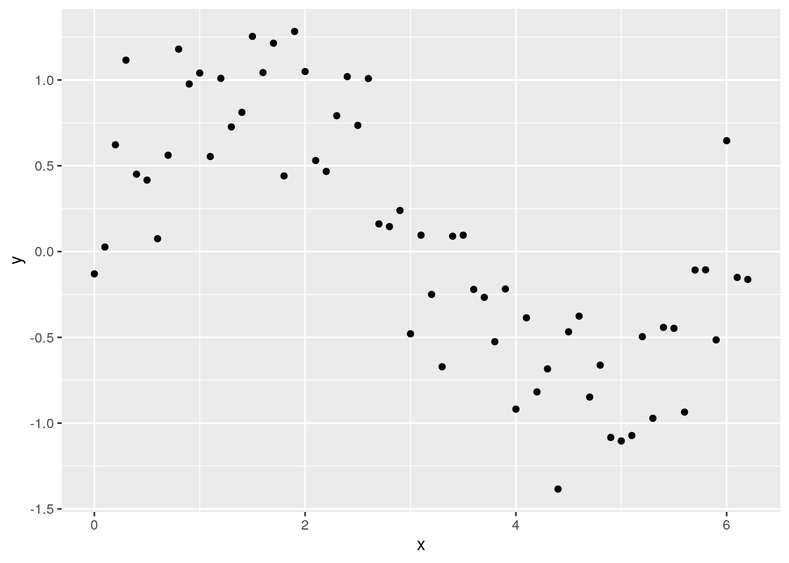
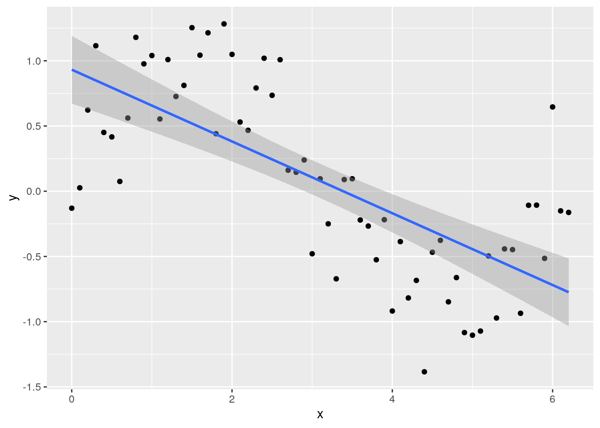
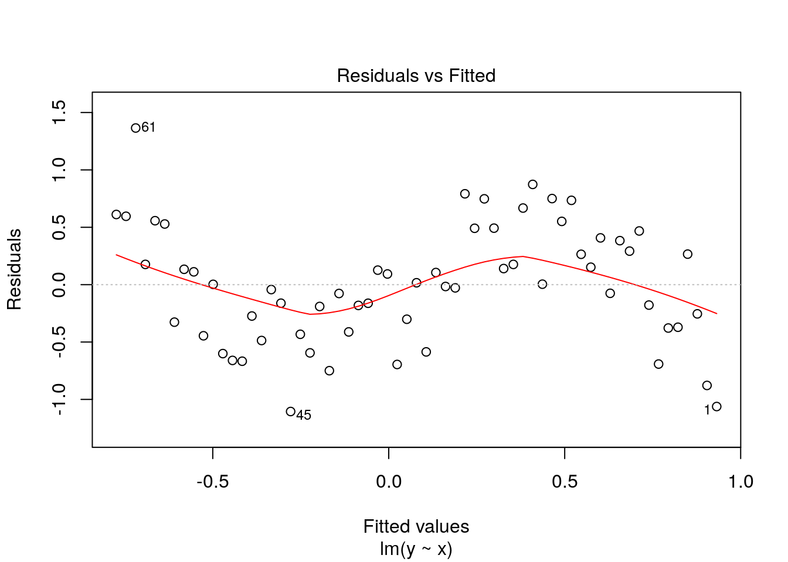
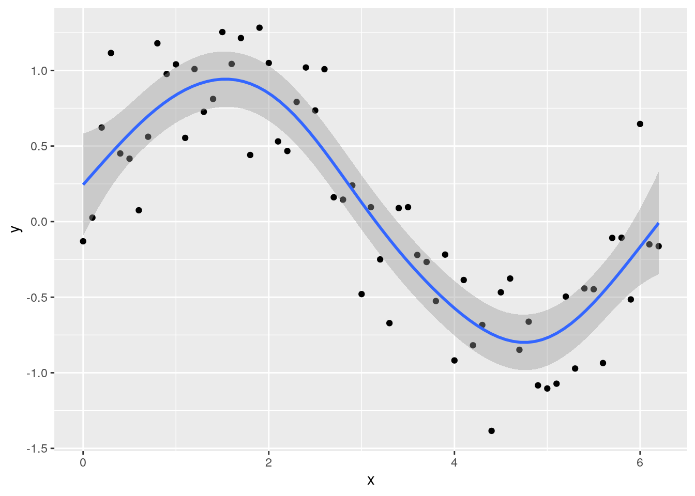
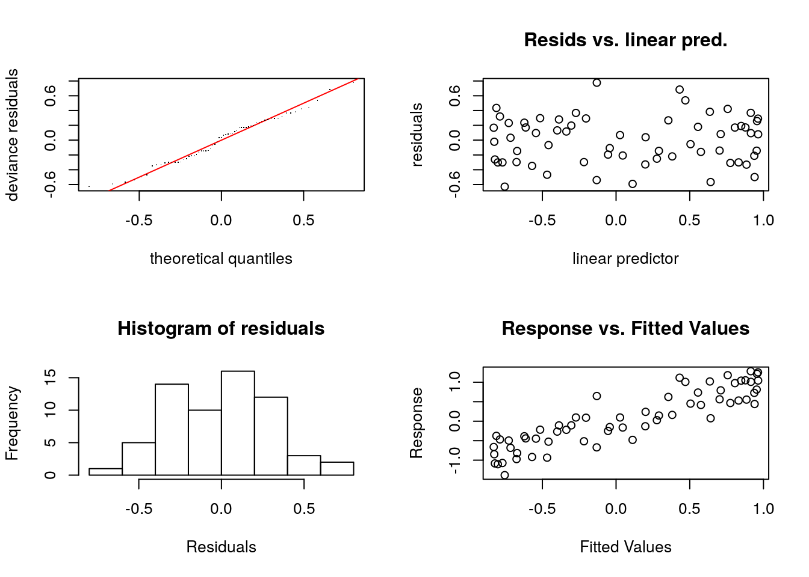

Chapter 3 Methods
In order to examine the marginal effect of wheat output per hectare to soil acidity, we need to control for the effects of other variables such as water availability, soil properties, elevation, and management difference amongst others. To do this we will run a fixed effects regression on all sub-kebeles for 2010-2016 with year and agricultural zone fixed effects. This regression allows us to examine how a one unit increase in fertilizer or pH effects wheat yields while controlling for other potential determinants of productivity.
3.1 Regression Strategy
To control for the highly non-linear nature of some of these relationships, most variables of interest are applied with cubic regression splines within a Generalized Additive Model (GAM) (Wood 2017). These have a cubic spline basis defined by a modest sized set of knots spread evenly through the co-variate values. They are penalized by the conventional integrated square second derivative cubic spline penalty, and will be denoted with s(,n) where n is the degree.
GAMs models are a simple extension of polynomial regression and generalized linear models (GLM). The primary difference between polynomial regression and GAMs is that GAMs uses smoothed functions for at least some of our covariates (X), as represented here by \(f(x)\). This simple addition will allow for a non-linear relationship between X and y, without imposing a functional form a priori (for instance a squared polynomial, or log-linear). This has a number of critical benefits, most importantly, the non-linear form in GAMs should match that of the underlying data generating process, this in turn provides more accurate estimates of marginal effects and better accuracy in out-of-sample prediction.
GAMs models take a familiar functional form:
\[y = b_0 + X +f(x_1)+...+f(x_p)+ \epsilon\]
Where \(y\) is our target variable, \(b_0\) is the intercept, \(X\) is a vector of linear covariates, \(f(x_p)\) defines some basis of non-linear functions, and \(\epsilon\) is the error term. This basis can simply be a polynomial one, for instance:
\[f(x) = \gamma_0+\gamma_1x^1+\gamma_2x^2+...+\gamma_nx^n+\epsilon\]
In this paper, we use a cubic spline basis to capture non-linear terms:
\[f(x) = \sum_{j=1}^{n}\beta_j(x)\gamma_j+\epsilon \]
Where \(\beta_j\) cubic spline basis function. Estimation is carried out by penalized maximum likelihood, where there is a penalty for over-fitting (creating wiggly lines) the data.4 Overall, GAMs provides a simple extension to typical modeling approaches that more meaningfully captures non-linear relationships, and increases model accuracy.
3.2 GAMS Tutorial
3.2.1 Setting up the problem
Lets try a simple example. First, let’s create a data frame and fill it with some simulated data with an obvious non-linear trend and compare how well some models fit to that data. The following example is pulled from here.

Try fitting a normal linear model:
##
## Call:
## lm(formula = y ~ x, data = Sample_data)
##
## Residuals:
## Min 1Q Median 3Q Max
## -1.10544 -0.37447 0.00279 0.39554 1.36520
##
## Coefficients:
## Estimate Std. Error t value Pr(>|t|)
## (Intercept) 0.9319 0.1297 7.183 1.12e-09 ***
## x -0.2752 0.0361 -7.622 1.97e-10 ***
## ---
## Signif. codes: 0 '***' 0.001 '**' 0.01 '*' 0.05 '.' 0.1 ' ' 1
##
## Residual standard error: 0.521 on 61 degrees of freedom
## Multiple R-squared: 0.4878, Adjusted R-squared: 0.4794
## F-statistic: 58.1 on 1 and 61 DF, p-value: 1.967e-10and plotting the fitted line with data using geom_smooth in ggplot

Looking at the plot or summary(lm_y), you might think the model fits nicely, but look at the residual plot – eek!

Clearly, the residuals are not evenly spread across values of \(x\), and we need to consider a better model.
3.2.2 Running the Analysis
Before we consider a GAM, we need to load the package mgcv – the choice for running GAMs in R.
To run a GAM, we use:
To extract the fitted values, we can use predict just like normal:
But for simple models, we can also utilise the method = argument in geom_smooth, specifying the model formula.

You can see the model is better fit to the data, but always check the diagnostics.
check.gam is quick and easy to view the residual plots.

##
## Method: REML Optimizer: outer newton
## full convergence after 6 iterations.
## Gradient range [-9.46585e-11,7.029666e-11]
## (score 29.99931 & scale 0.1111844).
## Hessian positive definite, eigenvalue range [2.124096,30.68672].
## Model rank = 10 / 10
##
## Basis dimension (k) checking results. Low p-value (k-index<1) may
## indicate that k is too low, especially if edf is close to k'.
##
## k' edf k-index p-value
## s(x) 9.0 5.6 1.11 0.77Using summary with the model object will give you the significance of the smooth term (along with any parametric terms, if you’ve included them), along with the variance explained. In this example, a pretty decent fit. The ‘edf’ is the estimated degrees of freedom – essentially, the larger the number, the more wiggly the fitted model. Values of around 1 tend to be close to a linear term. You can read about penalisation and shrinkage for more on what the edf reflects.
##
## Family: gaussian
## Link function: identity
##
## Formula:
## y ~ s(x)
##
## Parametric coefficients:
## Estimate Std. Error t value Pr(>|t|)
## (Intercept) 0.07893 0.04201 1.879 0.0655 .
## ---
## Signif. codes: 0 '***' 0.001 '**' 0.01 '*' 0.05 '.' 0.1 ' ' 1
##
## Approximate significance of smooth terms:
## edf Ref.df F p-value
## s(x) 5.604 6.752 33.98 <2e-16 ***
## ---
## Signif. codes: 0 '***' 0.001 '**' 0.01 '*' 0.05 '.' 0.1 ' ' 1
##
## R-sq.(adj) = 0.787 Deviance explained = 80.6%
## -REML = 29.999 Scale est. = 0.11118 n = 633.3 Present Value of Interventions
To calculate the total costs and benefits of lime and chemical fertilizers it is critical to note that fertilizers require annual applications, while lime is only applied once every 5 years. Fertilizer applications therefore need to be thought of as a repeated costs over a five year period, the present value of these costs therefore must be calculated.
3.3.1 Current Cost of Future Lime and Fertilizer Expenditures
The present value of a future cost can be calculated using a few pieces of information: 1) the cost paid each year, 2) the discount rate, and whether or not the cost is incurred at the beginning or end of the year. Here we assume that that annual costs of fertilizer remain constant at 15 birr per kilogram. Fertilizers will be applied at a rate equal to the estimated yield benefits of a single lime application. We also assume a discount rate of 15%, which accounts for the typical rate of return of an alternative investment, and we assume the costs are incurred at the beginning of each planting season.
The present value (cost) of a series of future expenditures is as follows:
- \[\ PV=\sum_{t=0}^{T}FV \frac{1}{(1+i)^t}\]
In this case, PV is the present value of future expenditures, FV is the annual cost of fertilizer, i is the discount rate, and T is the number of years payments are made. As such we can estimate the present value of applications of lime and fertilizer required to obtain the same yield increase (qq/ha) in wheat yields estimated above.
References
Wood, Simon N. 2017. Generalized Additive Models: An Introduction with R. Chapman; Hall/CRC.
A good description of GAMs and their relationship with OLS and non-linear regression can be found here: https://m-clark.github.io/generalized-additive-models/introduction.html↩